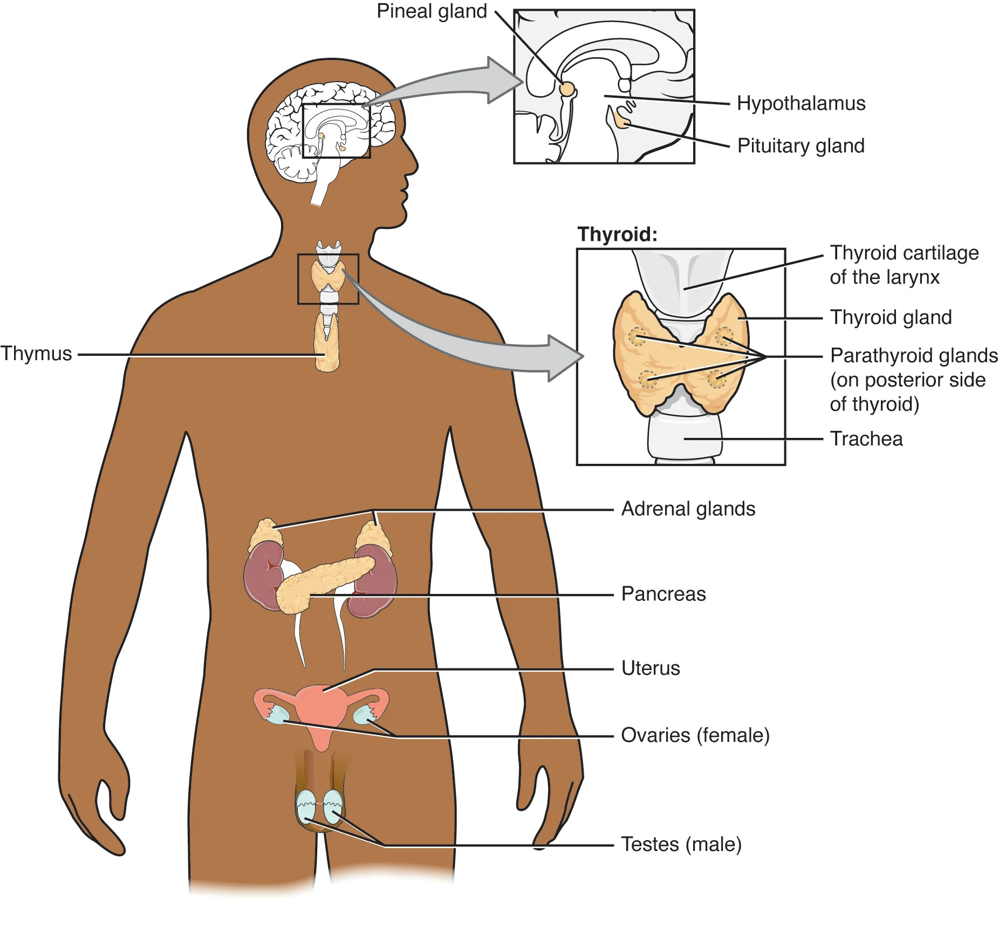
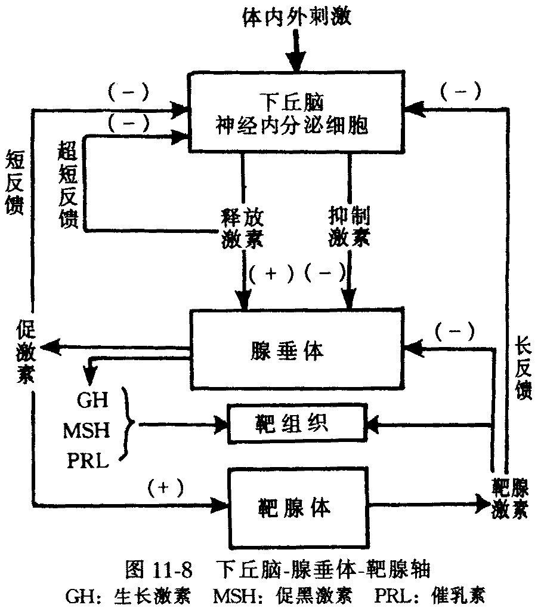

10.11
第十一节 内分泌系统
主要内分泌腺

| 内分泌腺 | 位置 | 激素 | 主要功能 |
|---|---|---|---|
| 甲状腺 | 颈前 | 甲状腺素(T3/T4) | 促进代谢、生长发育（特别是神经系统和骨骼） |
| 甲状旁腺 | 甲状腺背面 | 甲状旁腺素(PTH) | 升高血钙（降血磷） |
| 肾上腺 | 肾上方 | 皮质：皮质醇、醛固酮；髓质：肾上腺素、去甲肾上腺素 | 应激反应、水盐代谢、糖代谢 |
| 胰岛 | 胰腺内 | 胰岛素(β细胞)、胰高血糖素(α细胞) | 调节血糖（胰岛素降糖，胰高血糖素升糖） |
| 垂体 | 颅底蝶鞍 | 生长激素、促激素、催乳素、催产素、抗利尿激素 | "主腺体"，调节多种生理活动 |
| 下丘脑 | 间脑底部 | 释放激素、抑制激素 | 调节垂体功能（神经-内分泌枢纽） |
垂体与肾上腺的精确表述（高频易错）
- 垂体分为腺垂体（前叶）和神经垂体（后叶）：
- 腺垂体：自身合成并分泌生长激素（GH）、促激素（TSH/ACTH/FSH/LH）、催乳素（PRL）等。
- 神经垂体：不合成激素，仅储存和释放催产素（OXT）和抗利尿激素（ADH/血管升压素）；这两种激素由下丘脑视上核、室旁核合成，经轴突运输至神经垂体释放。
- 肾上腺分为皮质和髓质，来源与功能不同：
- 皮质：中胚层来源，分泌糖皮质激素（皮质醇）、盐皮质激素（醛固酮）和性激素。
- 髓质：外胚层神经嵴来源，分泌肾上腺素和去甲肾上腺素，属交感神经末梢。
易错点：催产素和ADH“来源下丘脑、释放于神经垂体”，不要写成“垂体后叶分泌”。肾上腺皮质与髓质胚胎来源不同、激素类型不同，是联赛常考对比点。
下丘脑-垂体-靶腺轴是内分泌调节的核心：
下丘脑-垂体-靶腺轴与反馈调节
下丘脑（释放激素）
→
垂体（促激素）
→
靶腺（激素）
→
作用于靶细胞
靶腺激素↑
←
负反馈抑制
←
垂体/下丘脑
典型轴：下丘脑(TRH)→垂体(TSH)→甲状腺(T3/T4)；下丘脑(CRH)→垂体(ACTH)→肾上腺皮质(皮质醇)。
负反馈调节是内分泌稳态的关键。激素水平过高反过来抑制上位腺体，维持平衡。"主腺体"垂体本身受下丘脑控制，故下丘脑才是内分泌最高统帅。
